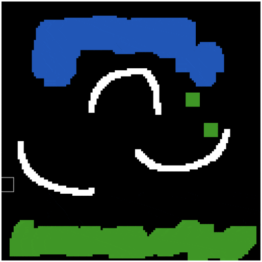
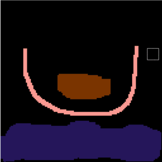
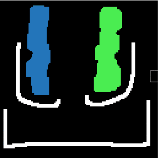

Falling sand simluators are a class of programs that aim to simulate falling sand particles using cellular automata. With cellular automata, the complexity of the simulation is just a matter of the complexity of the rule set each cell follows. As such, falling sand simulators often simulator far more than just sand particles. The objective of this project was to build a simple falling sand simulator that simulated simple liquid-like fluids. User can draw on a canvas to construct environments to be simulated and adjust properties of the fluids in real time. While this simluation is simple, it is fun to see the emergent behaviour of the particles.
Cellular automata is a discrete model of computation. Given an grid of cells, each cell is associated with a set of states and a set of rules that dictate the changing of these states. At each timestep in a simulation, each cell in the grid is looped through and processed according to their rule set. It is important to note that each cell acts independantly of one another, however their actions can be dependent on the elements in their neighbourhood.
Where cellular automate shine are its applications in creating emergent behaviour. Emergent behaviour are the outcomes in programs (usually simulations) that emerge from the interactions of independant agents within the program, rather then explicity programmed outcomes. Perhaps the classical example of this is Conway's Game of Life. The game is a zero-player game with a 2D grid of cells. Each cell has only two state: alive or dead. Each cell follows only a few basic rules:
Imagine instead of the two states in Conway's Game of Life, we had 3 states that represented 3 different types of matter: air, ground, sand. Each follow a simple set of rules. If the state is ground or air, do nothing. If the state is sand, check the cell directly below it. If the cell is air, swap the two cells (make the sand fall). If the cell below it is not air, then check the diagonal bottom left and diagonal bottom right for air cells and perform the swap. With these simple rules, we get behaviour similiar to that of falling sand that piles into pyramids. This is called a falling sand simulator.
But why stop there? Add a fourth state, water, and give it the same ruleset as sand with the two extra rules: check the cell direclty left and directly right for air. This will cause the water cell to slide along the surface until it falls. Then for the sand state, instead of swapping with just air, also swap with water so simulating sinking. It is not hard to see that we can continue to add states and associate them with complex rule sets to simulate intersting properties.
Falling sand simulators are this class of simulators that implement complex cellular automatas. Most falling sand simulators are used in video games to simulate interactive environments. Common among them are sandbox style building games. What inspired this project is the game Noita. In that game, every pixel is simulated as a cellular automata to create a fully destructable environment that players can play around in. Apart from fluids, they implement other natural phenomena such as fires and explosions which were all implemented as automatas. The game has been praised for the emergent behaviour of the environment interacting with itself. I think it is currently the best example of the power cellular automata has for simulating particles in video games.
Environments are not the only thing that can be simulated. If we consider the water in the early falling sand simulator example, and swapped with cells above instead of below, we get gas. Games have used cellular automata to simulate smoke and wind effects to great satisfaction. Another interesting application is used in procedurally generating terrains / levels which result in fairly convincing natural systems like caves and mountains.
My project builds a simple falling sand simulator from scratch. Like many sandbox games, it gives the user an environment for them to draw on prior to the simulation. It is a 128x128 grid. Typically, sandbox games will have a variety of cell types that user can add. In my simulator, there is only "one" type of cell that user can add but it contains multipe properties that user can edit. These properties include color, solidity, and density. The aim was to craft an general engine to simulate fluids of all type.
Mostly everything was programmed from scratch in Javascript. The only external library used was Dat.gui to help create the user interface as well as provide a familiar environment to those taking the course. All graphics were implement using the HTML5 Canvas.
The code is structured in 3 main parts. The first is defining a few classes to model mouse capture, the cell structure, and the simulation itself. The second part is the Gui setup with Dat.gui. The final part is the update/rendering loop that rendered the state of the simulation.
Essentially just a wrapper around a few variables. It contains the current cursor's x- and y-coordinates, as well as whether the left mouse button is currently beind pressed.
Again, this class is just a wrapper around the properties associated with a cell. It contains an array to represent the RGB values of the cell, a boolean to determine if it is solid/static, and a density variable. This class could be extended by adding more properties
This is the class that is most interesting and is the core of the program. In it contains a 2D array whcih represents the grid of cells. There are some helper functions to edit this grid. It also contains variables to keep track of the time so that the simulation can be stepped though after an interval rather than every draw frame.
The step function performs a single step of the simulation if sufficent time as passed since the last call. It loops through the cell grid bottom up. Since we are only dealing with one type of cell, I only needed to implement one rule set that applies to every cell. It is in essence the rule set for water described earlier with a few modifications. If you tries to implement the simple water rule set describes above, while the water will flow, it will be very uniform and depending on the order you loop through the cells the water will flow in a dominant direction which looks unnatural. One modification is to add randomness to the water and the order in which the cells are processed. This makes the water flow a bit more realistically but adds a bit of choppiness. Another modification was to account for density. Density objects were allowed to swap down with less dense objects. To simulate relative density, the probability that two cells swapped was based on the difference betwen the densities. More dense objects had a higher chance of sinking down in essence.
The rest of the program is simple enough. There were three main functions that became the three buttons on the Controls GUI panel. The simulate button was a simple toggle that set a flag to indicate that we should call step in the update/render loop. The cell strokes were maintained in a stack. The add and remove functions manipulated that stack and contructed Dat.GUI folders for each cell.
The canvas itself is 512x512 pixels. To render the 128x128 grid, I just looped through and assigned a grid to a 4x4 rectangle that was filled each frame. Attached to the canvas were a few mouse events that edited the mouse class and added cells to the simluation grid. Much of this is a simplified version of assignment 0 from class.
The following are a few steps taking from an example simulation. In it, the white cells are solid and do not move. The blue cells on top are denser than the green cells at the bottom.
This next one shows what can happen if you break through a solid cell mid simulations:
Finally this one shows what can happen if you change the densities mid simulation:
This project is a working simple fluid simulator using cellular automata. However, it is only the minimum. There are a few adjustments than can be made relatively simply that might improve the simulation. Firstly, fluids disperse too slowly. This is because I only check the immediate neighbouring cells. One could instead check for a specfic spread of cells to disperse from. Then we may add a property (say viscocity) to regulate this spread. Currently fluids with the same density treat each other like walls. An improvement would be to add a mixability property that would allow cells to disperse through a fluid in other directions and adjust their colors based on their neighbours. This would look similiar to the intermediary steps when changing densities mid simulation.
Those are simple improvements. For this application to be used in ambitious projects, it would be helpful to add more rules to simluate physics as well such as gravity and friction between cells. Furthermore, after many time steps, the bulk of the cells settle into an equilibrium and no longer move. Yet their rule set is processed every frame. You can use a set of chunks instead of the full 2D grid to reduce the number of cells that should be updated every frame. This would for larger environments greater than 128x128. Finally, many visual post processing effects such as bloom can greatly increase the aesthetic of the program. You can then have shinier fluids (like lava) for instance.